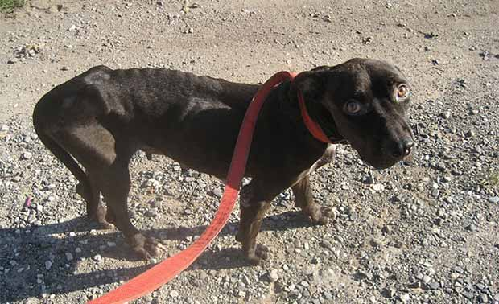

About
International Spay/Neuter Network (ISNN) is an all-volunteer, 501(c)(3) nonprofit organization, working in collaboration with the Jamaica Veterinary Medical Association and the Ministry of Agriculture & Fisheries — Veterinary Services Division to improve the lives of Jamaica’s animals and people.
Based in Fort Lauderdale, Florida, ISNN was founded in 2002 by Kimberly Swaim after she visited Jamaica in 2001 and witnessed the poor condition of the many dogs wandering the streets. Recognizing the need for an organization to help these animals, she set to work raising funds, recruiting volunteers, and reaching out to the Jamaican communities she hoped to serve.

In many areas of Jamaica, poverty is the norm, and pets suffer from poverty just as their owners do. Starving animals give birth to litters of offspring that cannot be fed, and illnesses and injuries go untreated. We believe that by improving conditions for these animals, we also improve the lives of the people of Jamaica.
What We Do
ISNN is the only organization working in Jamaica to reduce the overpopulation of unwanted animals, by offering free sterilization of stray dogs and cats, as well as pets whose owners cannot afford traditional veterinary care. We hold Community Spay/Neuter Clinics throughout the year, with the help of both local and foreign veterinarians and technicians, along with many other dedicated volunteers.
Our Goal
Our primary goal is to establish a comprehensive, cost-effective, humane solution to the overpopulation of companion and stray animals. In addition to providing sterilization, we consider humane education an essential component of our mission. We strive to create a more compassionate society, where companion animals are respected and protected, and ultimately inspire care and kindness to all animals.
ISNN cannot achieve these goals alone. We are grateful for the help of our many volunteers, supporters, and the communities we serve. Visit our Testimonials page and read accounts of the good work we do.